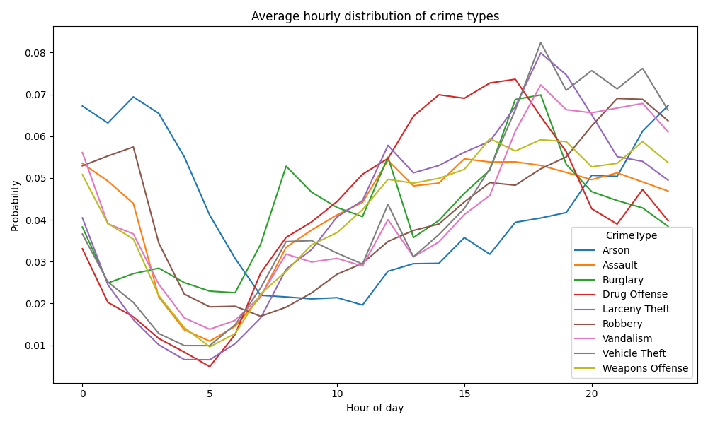

A data-driven look at how crime activity rises and falls throughout the day - and why these patterns remain surprisingly consistent over time.
DTU 02806 · Social Data Analysis & Visualization
The San Francisco Police Department publishes detailed records of police incident reports, documenting when and where crimes occur, as well as how they are categorized. This dataset spans multiple years and includes information such as timestamps, locations, and crime types, allowing us to analyze patterns across both time and space.
In this short data story, we focus on a simple but important question: when does crime happen during the day? By examining how incidents are distributed across the 24 hours of a typical day, and how these patterns change (or remain stable) over time, we can uncover underlying structures in urban activity.
It is important to note that this dataset reflects reported incidents, not necessarily all crime that occurs. Changes in policing strategies, reporting behavior, or data collection practices can influence the patterns we observe. As a result, the findings presented here should be interpreted as patterns in recorded data rather than direct measures of underlying criminal activity.
As with all police data, these patterns reflect reported incidents rather than all crime, meaning changes may also be influenced by reporting behavior and enforcement practices [3].
The data used here aligns with the San Francisco Police Department’s Crime Dashboard, which presents reported incidents and allows comparison across time periods, highlighting how trends can reflect reporting practices as well as underlying behavior [1].
Crime in San Francisco is not evenly distributed throughout the day. Instead, it follows a clear and repeatable daily cycle that reflects how people move and interact within the city. By aggregating incidents across multiple years and normalizing within each crime type, we focus on when crimes occur rather than how often they occur overall.
At the same time, overall crime trends do not always move in one direction—recent reports show that violent crime in San Francisco has declined to some of the lowest levels in decades, even as public perception often suggests otherwise [5].
The figure below shows the average hourly distribution of different crime categories. Each line represents a specific crime type, normalized to highlight when incidents occur. This allows us to identify shared temporal patterns across different types of crime.

One key pattern to notice is the sharp drop in activity during the early morning hours. Between roughly 4 AM and 6 AM, all crime types reach their lowest levels, likely reflecting reduced human activity. As the day begins, activity gradually increases, suggesting a close relationship between crime and the presence of people in public spaces.
From late morning into the afternoon, most crime categories rise steadily, with the most pronounced increase occurring in the late afternoon and evening (approximately 4 PM to 8 PM). This aligns with peak activity in the city, where commuting, shopping, and social interactions create more opportunities for incidents.
While the overall pattern is shared, there are subtle differences between crime types. For example, theft-related crimes tend to peak slightly earlier in the evening, while others extend later into the night, reflecting differences in context and behavior.
Importantly, this figure shows relative timing, not absolute risk. A higher value indicates when a crime is more likely to occur, not how common it is overall.
Overall, crime follows a structured and predictable daily rhythm, with low activity in the early morning and peaks during the most active hours of the day.
Crime trends do not move uniformly across categories, with some types increasing while others decline over time [3].
Temporal patterns only tell part of the story. While we now understand when crime tends to occur, it is equally important to examine where these incidents are concentrated. Rather than being evenly distributed, crime forms clear spatial clusters shaped by the structure and activity of the city.
The heatmap below highlights areas with higher concentrations of reported crime. Warmer colors (yellow to red) indicate higher density, while cooler colors (blue) represent lower activity. Instead of a uniform spread, we observe distinct hotspots across the city.
Crime patterns also vary significantly at a finer geographic scale, with neighborhood-level data showing that both violent and property crimes are unevenly distributed across the city rather than concentrated uniformly [6].
Crime is not evenly distributed across districts, with certain areas consistently accounting for a larger share of incidents depending on crime type [4].
This variation is consistent across multiple crime types, where some neighborhoods consistently show higher relative rates of assault, robbery, theft, and burglary compared to the city average, reinforcing the presence of localized crime hotspots [6].
One key pattern to notice is the strong concentration of incidents in central areas, compared to the more dispersed patterns in residential neighborhoods.
The most prominent hotspot appears in the central and eastern parts of San Francisco, including downtown, SoMa (South of Market), and the Mission district. These areas combine high population density, commercial activity, and major transport routes, increasing opportunities for interaction and reported incidents.
If we zoom in on the downtown (around Union Square and the Financial District) and the Tenderloin area, the density becomes particularly clear. Crime clusters along major streets rather than appearing as isolated points, reflecting the importance of highly trafficked corridors.
Moving west, neighborhoods such as Pacific Heights and the Western Addition (west of downtown) show lower intensity, with more dispersed incidents. This contrast highlights how crime density is closely tied to land use, with residential areas generally showing less concentrated activity.
In the Richmond and Sunset districts, the pattern becomes even more sparse, with isolated points instead of continuous clusters. These areas are primarily residential, with less dense foot traffic and fewer commercial hubs.
Looking toward the southern and southeastern areas, including parts of Bayview, we again observe localized clusters around specific roads and intersections, suggesting that even in less dense areas, crime concentrates around key nodes.
Overall, crime is highly concentrated in areas with high human activity. However, higher density does not necessarily imply more dangerous areas, as it may also reflect differences in reporting, policing, and population presence.
Together, these spatial patterns complement the temporal analysis, showing that crime is structured not only in time but also by the city’s geography.
So far, we have seen that crime follows a clear daily rhythm. A natural next question is whether this pattern changes over time. To explore this, we examine how hourly crime distributions evolve using an interactive visualization.
The figure below initially shows two representative crime types (Larceny Theft and Assault), both of which exhibit a clear daily cycle. Additional categories can be toggled to compare patterns across crime types. The focus is on whether the shape of the daily cycle changes, rather than total volume.
Across categories, the same overall structure appears: a dip in the early morning, followed by a steady rise and a peak in the late afternoon or evening. This mirrors the static visualization, suggesting the daily rhythm is shared across crime types.
Some variation exists, with certain crimes peaking slightly earlier or later. However, these differences are minor compared to the overall pattern, which remains consistent.
When multiple categories are viewed together, the consistency becomes clear. While some crimes reach higher levels than others—such as theft-related incidents peaking more strongly in the evening—the overall shape remains the same. These differences likely reflect context-specific behavior, but all categories follow a shared daily cycle, indicating that crime timing is driven by broader, persistent factors.
This highlights the distinction between changes in volume and changes in structure. While incident counts may vary, the underlying daily rhythm remains stable, likely reflecting consistent aspects of urban life such as work schedules and mobility.
As before, caution is needed. Stability in recorded patterns does not necessarily imply stability in underlying behavior, as changes in policing or reporting can influence the data.
Overall, crime timing in San Francisco remains highly stable over time, reinforcing the idea that it is closely linked to consistent patterns of human activity.
Crime in San Francisco doesn’t happen randomly throughout the day. It follows a clear daily rhythm, rising with human activity and peaking when the city is most active.
Taken together, the analyses reveal a clear picture: crime in San Francisco is not random. Instead, it follows structured patterns that align with human activity - increasing during the day, peaking in the evening, and concentrating in dense urban areas.
Different crime types follow distinct trajectories, suggesting that crime patterns shift rather than change uniformly [3].
These patterns are not random - they reflect when and where people are active. This means prevention strategies should focus on opportunity, not just enforcement.
Key idea: Effective responses should align with human activity patterns, not treat crime as uniformly distributed.
At first glance, one might interpret the evening peak as evidence that these hours are more “dangerous.” However, this would be overly simplistic. The data reflects recorded incidents, which are influenced not only by behavior, but also by policing strategies and reporting practices.
For example, areas with higher police presence or more foot traffic may generate more reports, even if underlying behavior is similar elsewhere. Changes in enforcement or policy can also create apparent trends without reflecting real changes in crime.
What we can say with greater confidence is that crime is shaped by routine human activity. The stability of these patterns suggests they reflect consistent aspects of how the city functions, such as work schedules, mobility, and social behavior.
Ultimately, crime follows structured and stable daily patterns. These patterns are useful for understanding urban dynamics, but they must be interpreted carefully rather than taken as direct measures of risk.